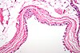

cyst

Definition: A cyst is a closed sac, having a distinct envelope and division compared with the nearby tissue. Hence, it is a cluster of cells that have grouped together to form a sac (like the manner in which water molecules group together to form a bubble); however, the distinguishing aspect of a cyst is that the cells forming the "shell" of such a sac are distinctly abnormal (in both appearance and behaviour) when compared with all surrounding cells for that given location. A cyst may contain air, fluids, or semi-solid material. A collection of pus is called an abscess, not a cyst. Once formed, a cyst may resolve on its own. When a cyst fails to resolve, it may need to be removed surgically, but that would depend upon its type and location.
Source: Wikipedia
Wikipedia Page (Something wrong with this association? Let us know.)
Wikidata Page (Something wrong with this association? Let us know.)